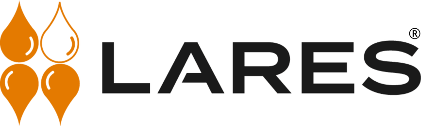
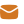

Laden…
info@laressolutions.comSinds 25 jaar het technisch klankbord van aannemers, architecten en studiebureaus met levering binnen 48 u in heel België.
Bescherm uw kelder tegen vocht, opstijgend water en condensatie. Permanent en bewezen effectief.
Vraag offerte aan ›